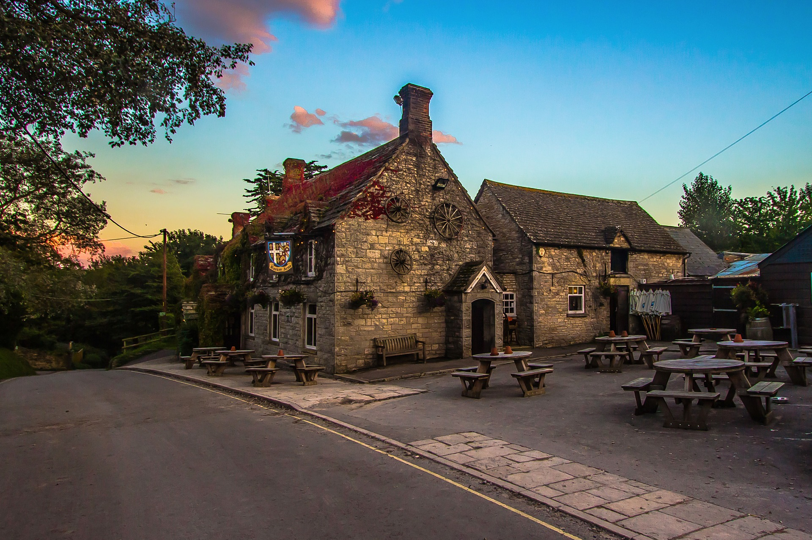

Our Story
The Galloping Goose was established in 1873 by my great-grandmother, Marike. She inherited from her father a 23 acre apple orchard and his prized goose Gertrude at the age of 16. In the beginning she would sell cider and pies on the edge of town to the villagers. Eventually she saved enough turn the farmhouse at the end of her land into The Galloping Goose. Over the last century The Galloping Goose has been handed down to the eldest daughter who keeps the legacy of the pub alive.
Contact
email: thegalgoose@goose.com
phone: 0118-999-881-999-119-725-3
address: 740 Yonderberry Ct. Tofalls, East Anglia, UK